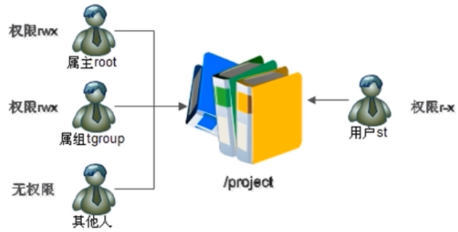
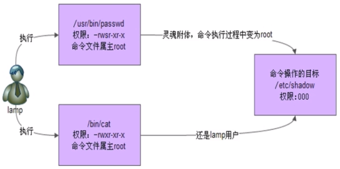
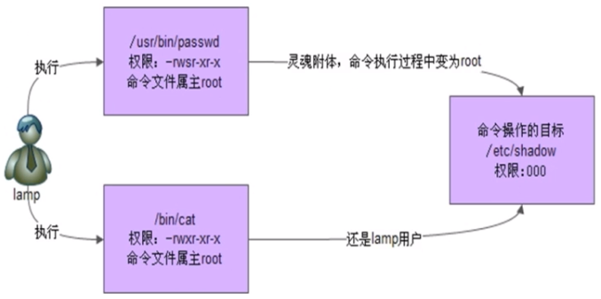

datetime:2022-01-08 14:34:00
author:nzb
Linux权限管理
ACL权限
ACL权限的简介和开启方式

任何一个文件在一个时刻只能有一个所有者和所属组
ACL权限用来解决文件的权限身份不够用的情况
ACL权限需要分区支持：
dumpe2fs -h /dev/sda5/ 查看是否支持acl选项，如果不支持。
/dev/sda5/ 为df -h 查看根分区对应的文件系统可以临时开启：mount -o remount,acl /
重新挂载根分区，并挂载加入acl权限或者永久开启：vim /etc/fstab，然后重启系统
在根分区的defaults后面加个：,act 慎用：任何错误都会导致挂载失败
ACL权限类似于windows的权限设置方法，就是不考虑user，group和others的权限设置，单独添加一个用户或者一个用户组对一个文件或者目录的权限
查看与设定ACL权限
getfacl
查看ACL的权限：getfacle 文件名setfacl
设置ACL的权限：setfacl [选项 ] 文件名setfacl -m u/g/m：用户名/组名/不写权限 文件名：设定文件的ACL权限
setfacl -m u:用户名:权限 文件名：设定文件用户的ACL权限
为用户分配ACL权限，使用“u:用户名:权限”格式 例：setfacl -m u:user1:rwx /test/setfacl -m g:组名:不写权限 文件名：设定文件用户组的ACL权限
为组分配ACL权限，使用“g:组名:权限”格式
setfacl -x ：删除指定的ACL权限
setfacl -b ：删除所有的ACL权限
setfacl -d ：设定默认ACL权限
setfacl -k ：删除默认ACL权限
setfacl -R ：递归设定ACL权限
最大有效权限与删除ACL权限
最大有效权限mask：可以通过getfacl 文件名来查看ACL的权限，里面有mask，可以通过控制mask的值来修改默认最大有效权限。
需要注意的是mask权限不会影响当前文件所有者，只会影响ACL权限和所属组的权限
setfacl -x u/g:用户名/组名 文件名：删除文件指定的ACL权限
setfacl -b 文件名：删除文件所有ACL权限
默认ACL和递归ACL权限（只能针对目录）
setfacl -m d:u/g: 用户名/组名:权限 文件名：设定父目录的默认ACL权限，父目录里所有的新建文件都会继承父目录的ACL权限
d参数就是设置默认的ACL权限setfacl -k：删除父目录的默认ACL权限
setfacl -m [选项] -R 文件名：递归设定文件夹的ACL权限
setfacl -m u:test:rx -R 文件名
文件特殊权限
SetUID：在所有者的x位置上变成了s
针对二进制文件passwd命令拥有SetUID权限，所以普通用户能修改自己密码
 
四个条件缺一不可：
只有二进制文件（例如命令和脚本文件）才能设定SUID权限
命令执行者必须对该程序有x权限
命令执行者会在执行的时候获得该程序文件的属主身份
SUID权限只在该程序执行过程中生效，也就是身份改变旨在程序执行过程中有效
我们通常会看到4777，2777，1777的权限标识，依次是加了SUID，SGID，SBIT权限
4代表SUID 2代表SGID 1代表SBIT设定SetUID的方法
4代表SUIDchmod 4755 文件名
chmod u+s 文件名
取消SetUID的方法
chmod 755 文件名
chmod u-s 文件名
可以用chmod来赋予和删除SUID
SetUID是非常危险的，一个命令只要有了s权限，例如passwd命令，普通用户就可以通过执行这个命令获得passwd的属主身份，也就是进入root权限。
比如：给vim加了SetUID后，普通用户就会有root权限，例如：修改/etc/passwd文件，非常危险。关键目录应严格控制写权限（普通写权限，不是SetUID权限）。比如“/”、“/usr”等
用户的密码设置要严格遵守密码三原则
对系统中默认应该具有SetUID权限的文件作出备份，定时检查有没有这之外的文件被设置了SetUID权限
SetGID：在所属组的x位置上变成了s
针对二进制文件和目录针对二进制文件，四个条件缺一不可：
只有可执行的二进制文件才能设置
命令执行者必须对该程序有x权限
命令执行者会在执行的时候获得该程序文件的所属组身份
SUID权限只在该程序执行过程中生效，也就是所属组身份改变旨在程序执行过程中有效
注：例如/usr/bin/locate命令
针对目录，三个条件缺一不可：
普通用户必须对此目录拥有r和x权限，才能进入该目录
普通用户在此目录中的有效组会变成此目录的所属组
若普通用户对此目录拥有w权限时，新建的文件的默认组不是文件自己的初始组，而是这个目录自己的所属组
可以用chmod来赋予和删除SGID
设定SetGID的方法
2代表SGIDchmod 2755 文件名/二进制文件
chmod g+s 文件名/二进制文件
取消SetGID的方法
chmod 2755 文件名/二进制文件
chmod g-s 文件名/二进制文件
Sticky BIT(黏着位)：在其他人的x位置上变成了t
针对目录三个条件缺一不可：
只有目录才能设定SBIT权限
普通用户必须对该目录有x和w权限
有了SBIT，普通用户即使有目录的w权限，也不能删除其他用户建立的文件
设定SBIT的方法
1代表SBITchmod 1755 文件名
chmod o+s 文件名
取消SBIT的方法
chmod 1755 文件名
chmod o-s 文件名
需要注意的安全性：
- 需要定期对系统中含有SUID或者SGID权限的文件进行检查，如果有异常多出来的含有该权限的文件，如果多出来了，是一个极大的安全隐患，需要手工清除。
文件系统属性chattr权限
chattr（change file attributes on a linux file system）
格式：
chattr [+-=] [选项] 文件或目录名符号
+：增加权限
-：删除权限
=：等于某权限
选项
i：
1.对文件：不允许任何用户（包括root用户）对文件进行任何修改，只能读
2.对目录：任何用户（包括root用户）只能在目录下修改文件内容，但是不能删除和创建文件
a：
1.对文件：任何用户（包括root用户）只能对文件增加数据，但是不能删除和修改现有数据
2.对目录：任何用户（包括root用户）只能在目录中建立和修改文件里的内容，但是不能删除文件
lsattr
查看文件系统属性：lsattr 选项 文件名lsattr -a 文件名：显示所有文件和目录
lsattr -d 文件名：若文件时目录，仅列出目录自己的属性
系统命令sudo权限
之前学的是对文件的操作权限，sudo是对系统命令的权限。
sudo权限是root把本来只能超级用户执行的命令赋予普通用户的执行
root权限先执行命令visudo命令
实际修改的是：/etc/sudoers文件在这一行root ALL=(ALL) ALL下面添加
root ALL=(ALL) ALL
给用户格式：用户名 被管理主机的地址 = （可使用的身份）授权命令（绝对路径）
第一个ALL：允许在命令在哪台计算机上执行
第二个ALL：把前面的用户转变成这个身份，一般不用
第三个ALL：所有命令，应该写具体权限
%wheel ALL=(ALL) ALL
给组- %组名 被管理主机的地址=（可使用的身份）授权命令 （绝对路径）
例如：jack ALL=/sbin/shutdown -r now：授权jack能重启服务器的权限
sudo -l：
查看自己能用那些sudo命令sudo：
执行sudo命令：sudo [绝对路径命令]注意：vim命令不用设置sudo给普通用户，否则会拥有root的所有权限，非常危险